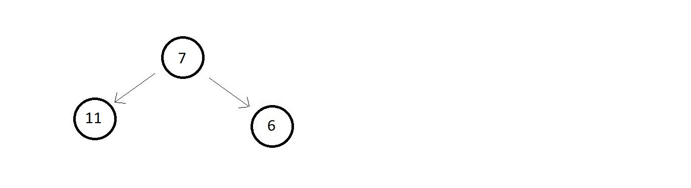
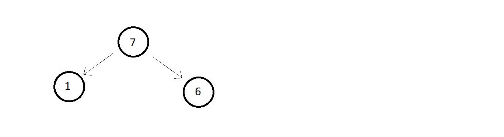
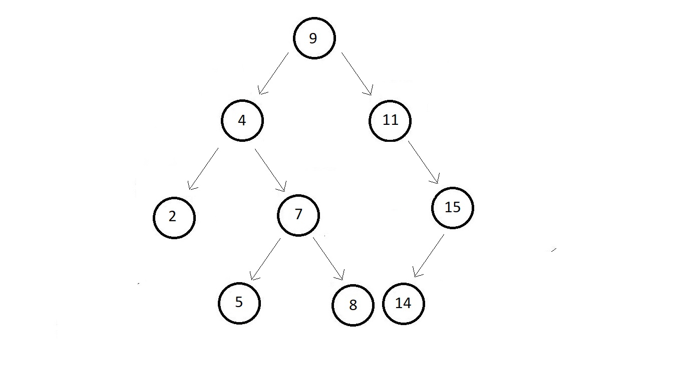

Is this a binary seach tree?

The answer is no. Since the left subtree of the root node has a single element that is greater
then the root node vialating the 2nd property, hence it is not a binary search tree.
Is this a binary seach tree?

The answer is no because the left subtree is good but the right subtree of the root node is
lesser than the root node itself violating the 3rd property.
Analize this one

For a binary tree this big, it will take time. So the faster way is using a property.
InOrder traversal of a binary search tree gives an ascending sorted array.
For InOrder traversal we use easy method that is